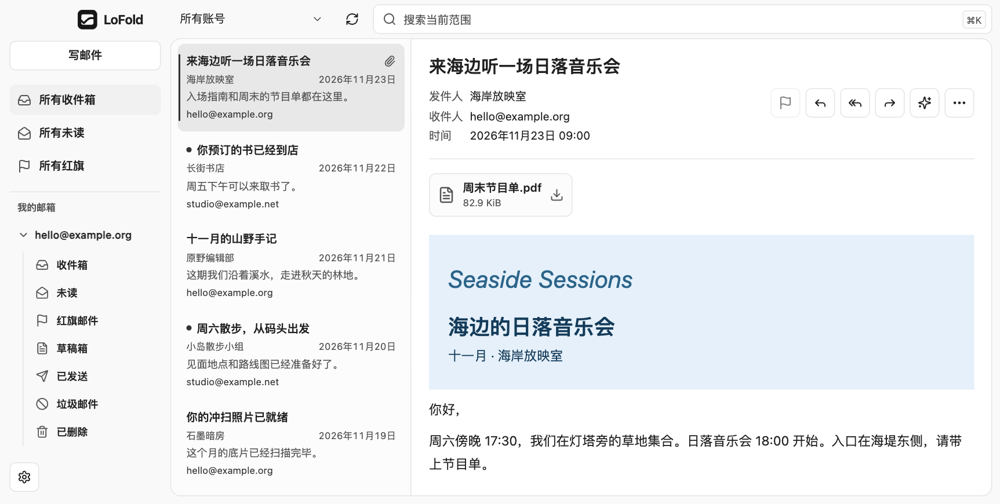
本机 AI 能帮你做什么？
用一封音乐会邀请，看看 LoFold 在同一台电脑上用 Ollama 和 Qwen2.5 3B 实际生成的结果。
日落音乐会几点集合？
在「AI 查信」里选择邮箱或整个归档，用平常说话的方式提问。示例里，模型找到了周六 17:30 的集合时间，也列出了可以点开核对的邀请邮件。

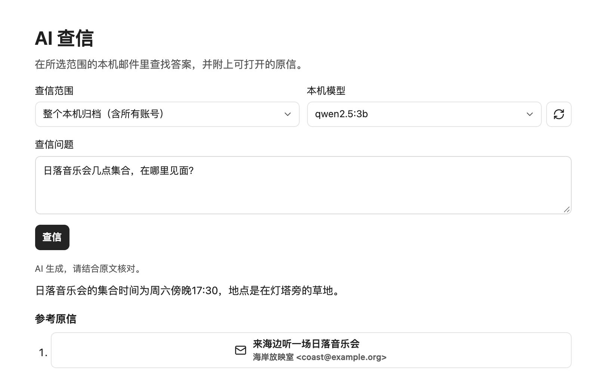
把一封邀请读成几条要点
打开邮件操作栏的「本机 AI」，选择「摘要」。这封邀请里的集合时间、演出时间、入口和要带的节目单都能和原文对照。

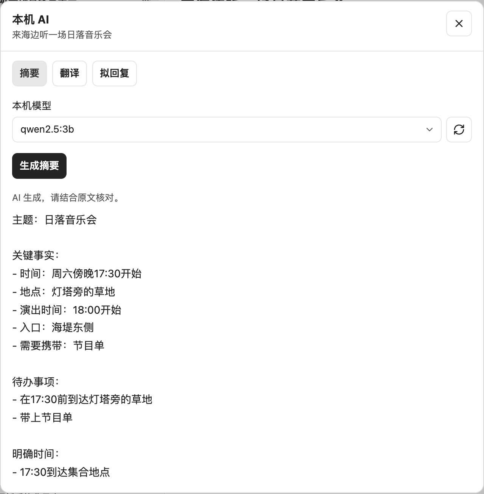
在原信旁读懂另一种语言
在「翻译」里选择简体中文、英语、日语或韩语。这里选了英语，译文保留了集合地点和两个不同的时间。

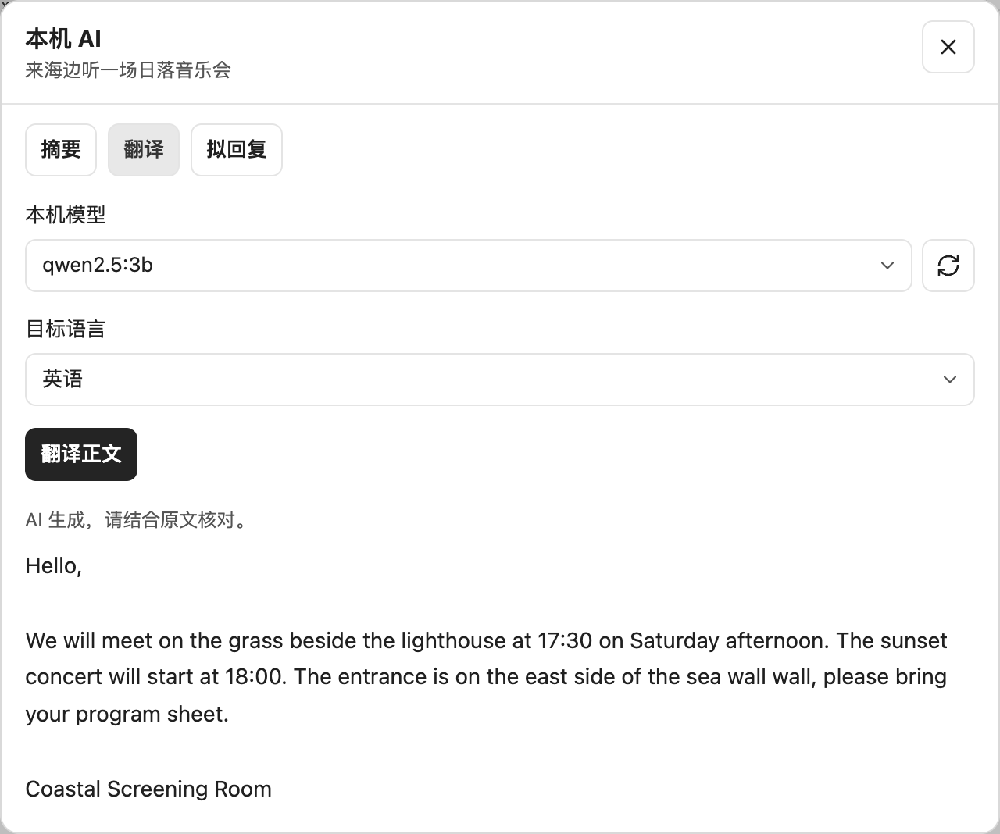
让 AI 起草，自己决定怎么回
写下你想表达的意思，先预览生成的文字，再点「用作回复草稿」。你可以在写信窗口修改、添加附件并确认发送。

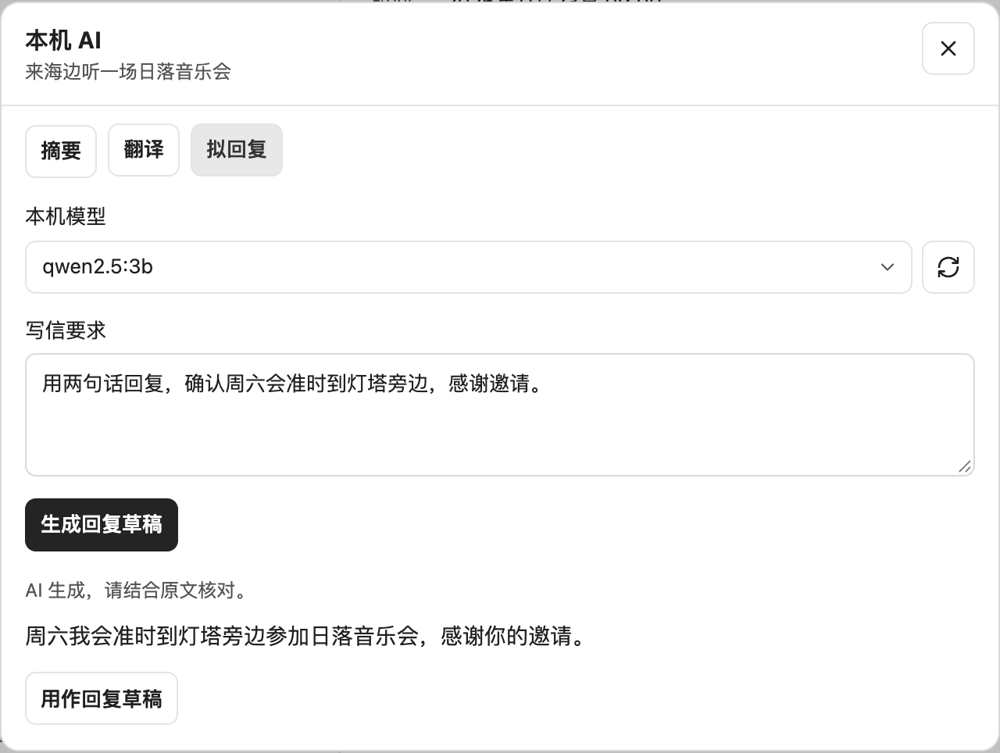
下载安装
0.6.0 开发版 · 发布说明-
macOS
Apple 芯片和 Intel Mac打开 DMG，将 LoFold 拖入「应用程序」。此开发版采用临时签名，尚未通过 Apple 公证。
-
Windows
64 位 · x64按提示安装到当前用户，需要 WebView2。此开发版尚无发布者签名。
-
Android
ARM64 手机和平板适用于 Android 7.0 及以上版本。APK 使用 LoFold 项目密钥签名。
-
iOS
iPhone、iPad此构建用于 Apple 芯片 Mac 上的 Xcode 模拟器。iPhone、iPad 真机暂未提供公开安装渠道。
-
鸿蒙
HarmonyOS NEXT原生离线版可导入、搜索和阅读 EML。真机公开安装仍缺少 LoFold 的华为发行签名。
暂无真机包
功能图解
以下截图取自 macOS 客户端，使用示例账号和邮件。点击可放大。
收发与阅读

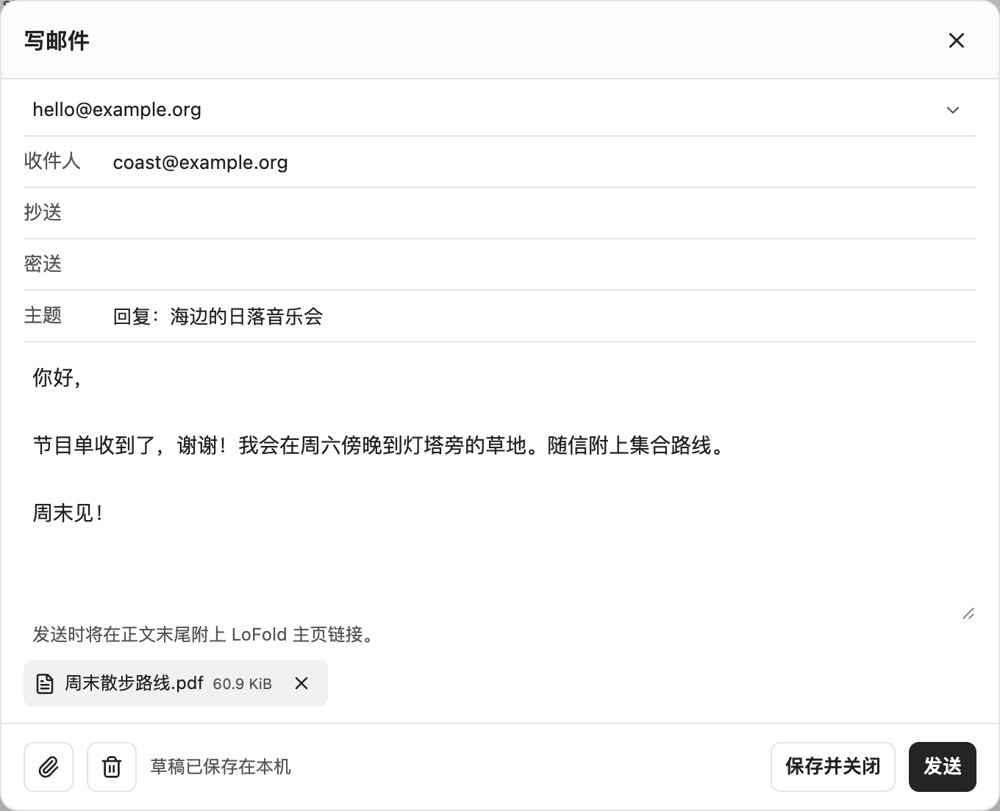
写信、回复和添加附件
在侧栏点「写邮件」，或在原信上点回复。选择发件邮箱，填写收件人、抄送和密送，用底部的回形针附上文件。

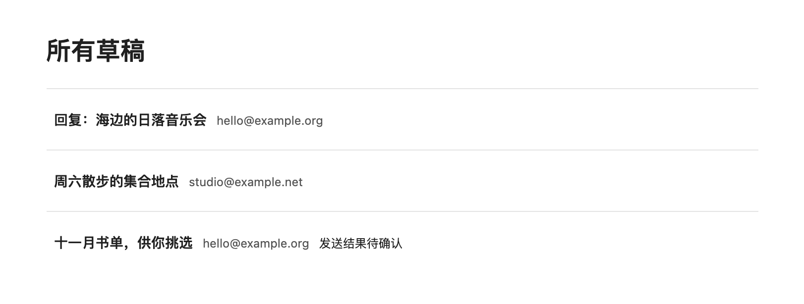
继续草稿，核对发送状态
在「所有草稿」中点开一封继续编辑。遇到「发送结果待确认」，先去服务商邮箱核对，避免重复投递。

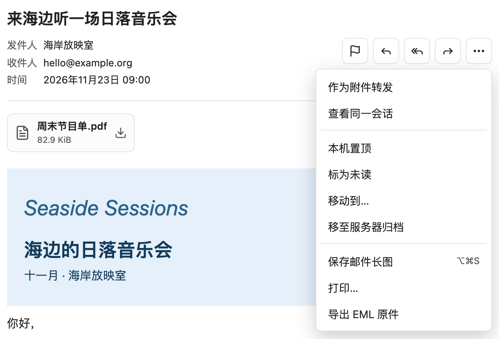
整理、转发和导出原件
阅读栏右上角可回复、回复全部或标红旗。打开「更多邮件操作」，可以查看同一会话、移动邮件、打印，或导出 EML 原件。

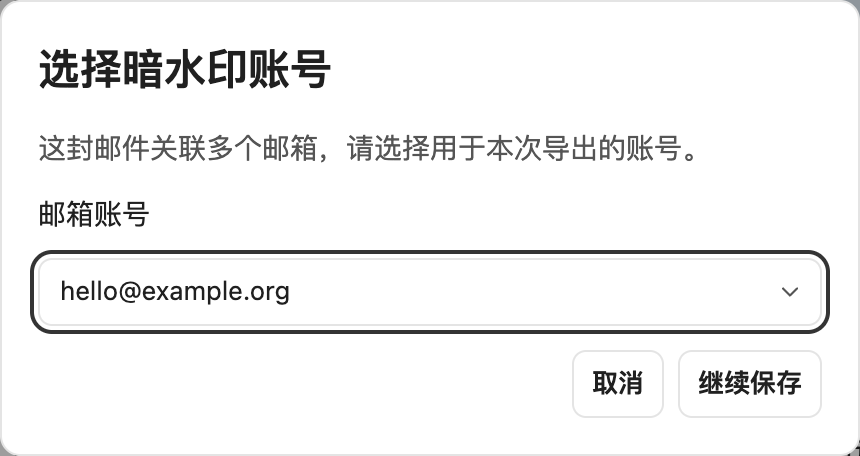
保存邮件长图
在「更多邮件操作」里选「保存邮件长图」。从本机归档导出且涉及多个账号时，先选要写入暗水印的邮箱。以后可在「设置 → 本机存储」读取原始 PNG 的水印。
搜索与离线归档

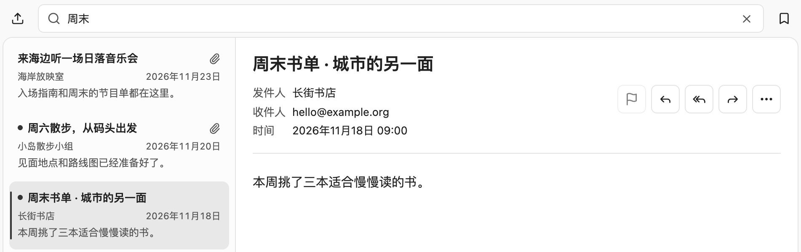
离线找回一封邮件
在侧栏打开「本机归档」，用顶部的导入按钮添加 EML。按 ⌘K 输入主题、正文、发件人或附件名，点开匹配项就能读原信。

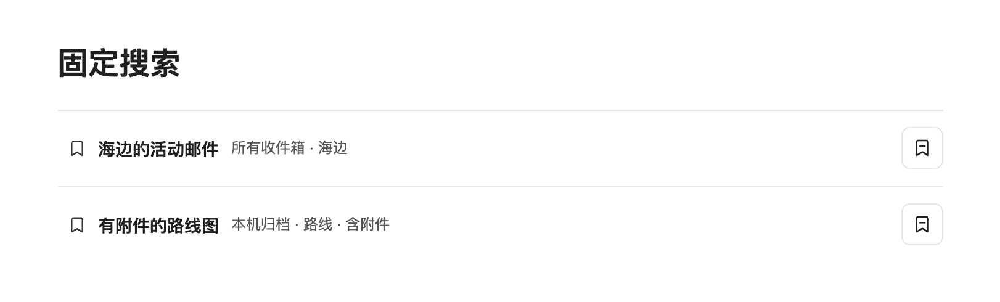
固定常用搜索
搜索后点输入框右侧的书签，为这组条件命名。以后从侧栏的「固定搜索」打开，就能再次查询同一范围。

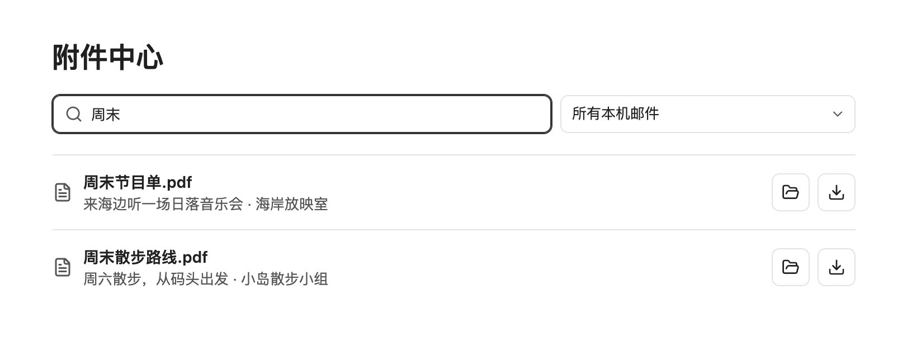
按文件名找附件
在「附件中心」输入文件名，可再限定邮箱。点文件夹图标跳到原信查看上下文，或用下载图标直接保存附件。

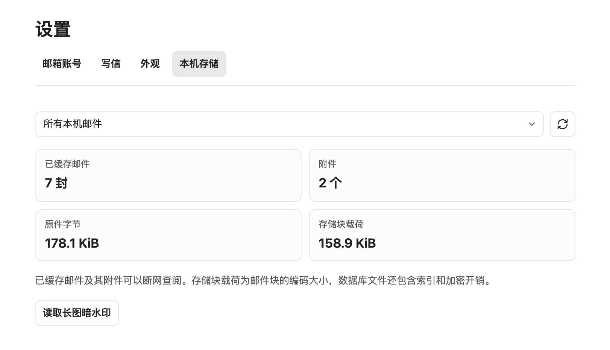
出发前准备离线邮件
在「设置 → 本机存储」选账号，查看已缓存的邮件和附件数量。联网时可用刷新按钮备齐最近 20 封，断网后仍可查阅已取回的内容。
账号与外观

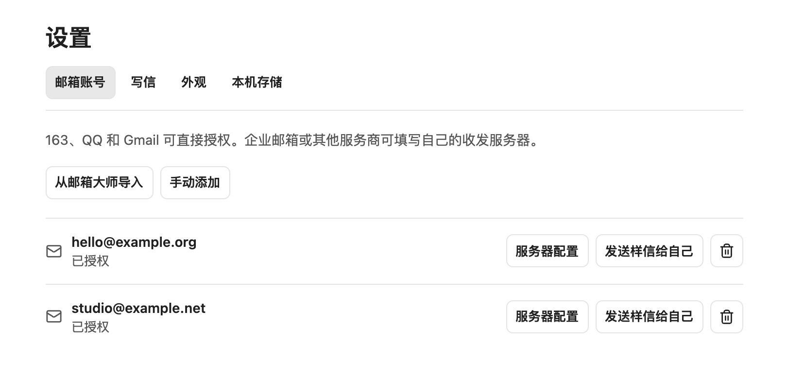
添加邮箱，检查收发
在「设置 → 邮箱账号」手动添加地址，或从 macOS 邮箱大师导入受支持的账号。授权后可向自己发送样信，检查发出和查收两个环节。

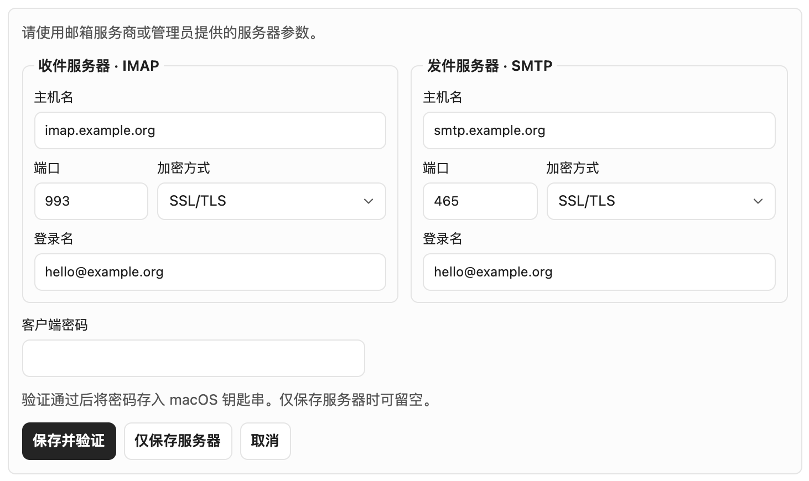
分别配置收件和发件
163、QQ 和 Gmail 有预设。其他服务商可打开「服务器配置」，分别填写 IMAP 和 SMTP 的主机、端口与加密方式。验证通过后，凭据保存在 macOS 钥匙串。

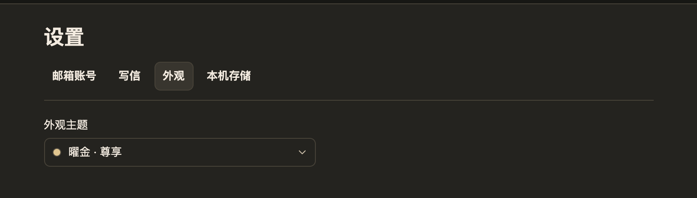
选择阅读主题
在「设置 → 外观」切换十套客户端主题，窗口会立即换色。图中选用「曜金」，适合偏好深色阅读的用户。
git clone https://github.com/trsoliu/lofold.git
cd lofold
export PATH="$HOME/.cargo/bin:$PATH"
pnpm install --frozen-lockfile
pnpm dev联系方式
使用微信扫一扫，或保存二维码后在微信中识别。